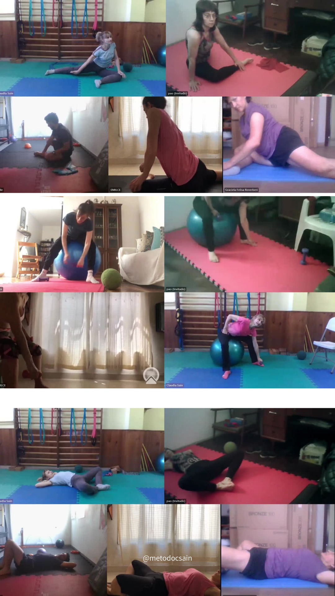
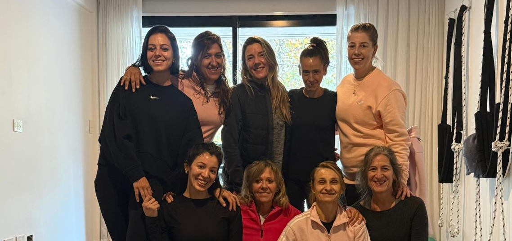
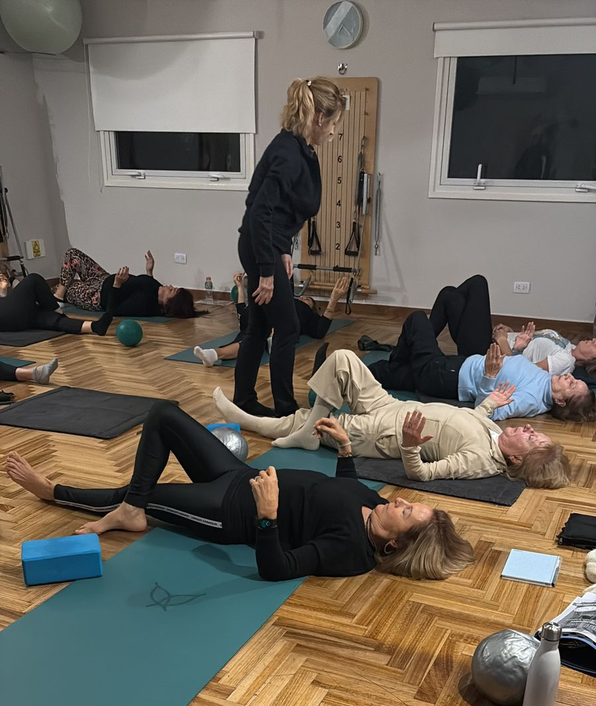
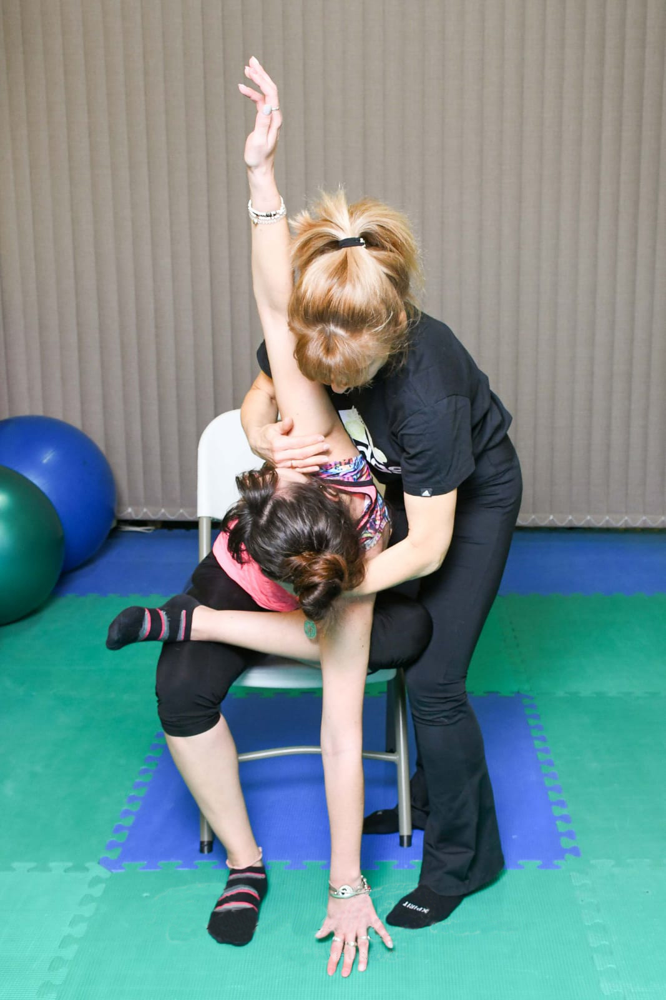
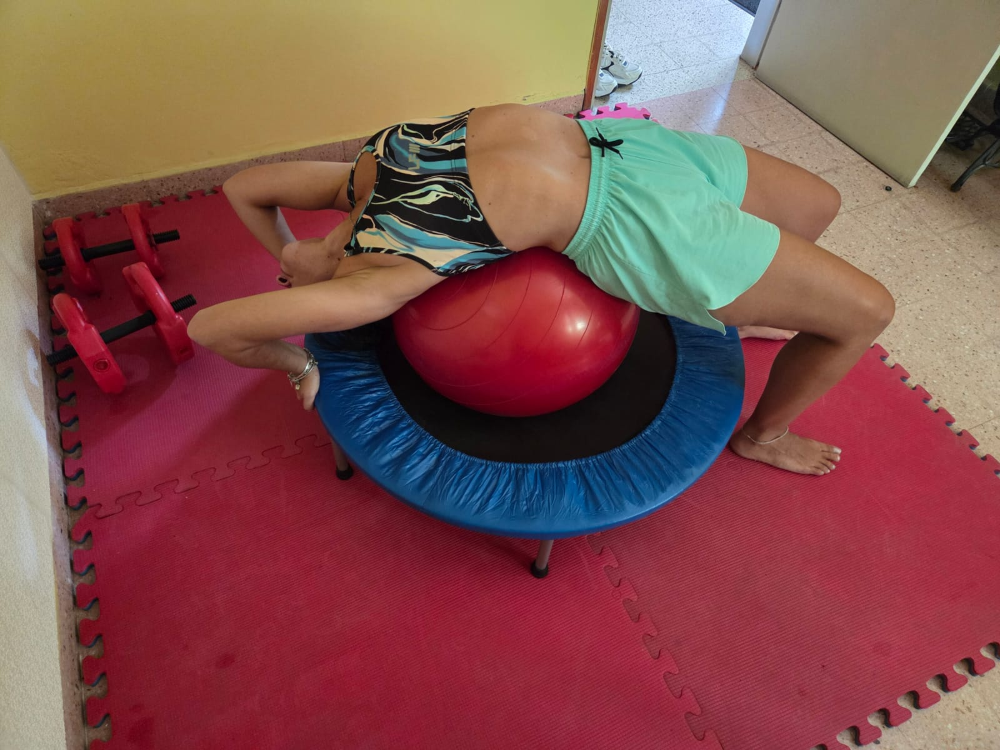

Certificación Profesional
Un trayecto educativo integral dividido en 4 etapas correlativas, diseñado para dominar la biomecánica, la planificación y la reeducación del movimiento consciente bajo el aval del Método CSain®.
Programa Entrenador/a en Flexibilidad y Elongación Integrativa
Fundamentos iniciales del método. Introducción a las técnicas básicas de elongación, alineación corporal y desarrollo de la flexibilidad consciente.
Programa Planificación de Clases
El arte de diseñar sesiones efectivas. Estructura de cargas, progresión lógica del entrenamiento y adaptación según las asimetrías de cada alumno.
Profesorado de Reeducación del Movimiento y Correctiva Postural
Formación pedagógica y conducción de grupos. Metodologías de enseñanza avanzadas para guiar clases presenciales y virtuales con excelencia técnica.
Mecánica y Dinámica de las Cadenas Óseas, Musculares y Miofasciales
Especialización biomecánica y análisis avanzado del movimiento. Integración de la neurociencia aplicada a la flexibilidad extrema y prevención de lesiones.
Tu Formación, Tu Elección
Contamos con opciones diseñadas para que te capacites a tu medida: de forma 100% presencial en nuestros encuentros intensivos o de manera 100% online desde donde estés.




